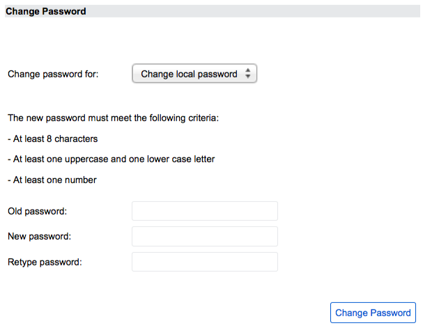

Password Reset
| |
Note: This article applies to Fuji and earlier releases. For more current information, see Password Reset and Password Change Applications at http://docs.servicenow.com
The ServiceNow Wiki is no longer being updated. Visit http://docs.servicenow.com for the latest product documentation. |
Contents
1 Overview
The Password Reset application helps organizations implement and monitor a customizable self-service or service-desk process for resetting and changing passwords on the local ServiceNow instance. Subscribing to the Password Reset Orchestration Add-on provides the ability to reset passwords on Active Directory and other credential stores. To see an introductory video on Password Reset, go to Introducing Password Reset (Video).
Password reset is available starting with the Dublin release.
2 Password Reset Process Flow
The password reset life cycle consists of:
- Planning to ensure that all applicable organizational guidelines, security policies, and areas of the organization are considered. Click here to view planning procedures.
- Setting up the password reset process according to the plan. Click here to view setup procedures.
- Resetting passwords. Click here to view reset procedures.
- Monitoring password reset activity to identify security threats and to ensure compliance with the organization's password policy requirements. Click here to view monitoring tasks.
To see a video on setting up Password Reset, go to Setting Up a Service Desk-Assisted Password Reset Process (Video).
2.1 Planning for Password Reset
While planning your password reset implementation consider:
- Groups: Analyze and assess how members of each group in your organization access the system. For example, if members of the sales group primarily access the system remotely, consider using a stronger method or multiple methods for verifying each user's identity.
- Roles: Identify user roles that have access to critical information and resources. For example, stronger verification methods may be required for roles that have access to employee data, accounting information, or network configurations.
- Verification methods: Determine the number and variety of verification methods needed for the different password reset processes based on the analysis of groups and roles.
- Credential store: Determine if single sign-on is enabled with the type of directory service or other credential store used. If the directory service is configured for single sign-on, consider increasing the level of security by using multiple methods to verify a user's identity. A compromised user name and password can easily allow access to associated systems in a single sign-on environment.
- Enrollment: Consider how enrollment will be implemented within the organization. For example, will enrollment in the password reset program be optional or required? How will users be notified to enroll in the program? Will users be auto-enrolled in the program? The answers to these questions will help you determine the appropriate verification types to use.
- Password reset process: Consider the password reset options the organization wants to offer users. Will users reset their own passwords from a self-service module or will the service-desk reset passwords on behalf of users? If the organization uses single sign-on, how will users reset their password if they are unable to log on? What options are available to users working offsite?
- To make the Password Reset application with Orchestration available to all users publicly, create a new Password Reset Process only for this purpose and make it accessible to Public. Create and publish a new URL for the process.
2.2 Setting Up Password Reset
An administrator or user with the password_reset_admin role configures password reset with the following elements:
- Verifications: define methods for confirming a user's identity during enrollment and during a password reset. Click here for instructions on configuring verifications.
- Credential Stores: specify where to find login credentials such as user names and passwords. Click here for instructions on configuring credential stores.
- Processes: define how users reset their passwords. Click here for instructions on defining the password reset processes. To configure the password reset process, you specify:
- The verification methods used to authorize the password reset.
- The credential store containing the user's login credentials.
- The user groups authorized to use password reset.
You can set up password reset to match your organization's preferred access method:
- Self-service: users reset their password over the Internet from a publicly accessible web page. Administrators must publish the URL to the password reset form.
- Service desk: users reset their passwords with the assistance of a service-desk employee over the phone or in person. Service-desk employees must have the password_reset_service_desk role to perform password resets on behalf of users.
To see a video of the user's perspective on resetting a password, go to Resetting User Passwords (Video).
2.3 Monitoring Password Reset Activity
The Password Reset application provides a variety of tools to help you monitor password reset activity for potential security threats, compliance with organizational password policies, and any problems with password reset processes and verifications. For more information, see Monitoring Password Reset Activity.
3 Password Change
Password change extends the Password Reset application by letting administrators define how users change their passwords from a self-service module.
Password change is available starting with the Fuji release.
3.1 Password Change Process
The password change process consists of the following steps:
- The user logs in to the instance.
- The user selects the Change Password module or link from the user profile record.
- Change Password
- The user selects the credential store where their password resides.
- The user provides the old and new passwords.
- The appropriate workflows validate the old and new passwords.
{kind=link}
3.2 Setting Up Password Change
An administrator or user with the password_reset_admin role can configure the password change process with the following records:
- Credential Stores: specify where to find login credentials such as user names and passwords. Click here for instructions on configuring credential stores.
- Password Change Process: define the process that users follow to change their passwords. Click here for instructions on defining the password change process. To configure the password change process, you specify:
- The credential store containing the user's login credentials.
- The user groups authorized to change their passwords.
The password change application supports only a self-service password change process. An administrator must publish the URL to the password change form.
3.3 Monitoring Password Change Activity
Administrators can monitor password change activity for potential security threats, ensure compliance with organizational password policies, and identify problems with password change. See Monitoring Password Reset Activity.
3.4 Mobile Support
Administrators can enable support for password change from tablets and mobile devices.
4 Roles
| Role title [name] | Description |
|---|---|
| password reset administrator [password_reset_admin] |
Sets up the processes for password reset and password change. |
| service desk agent [password_reset_service_desk] |
Resets passwords on behalf of users, tracks password reset requests, and views logs. |
| credentials manager [password_reset_credential_manager] |
Determines which credential stores are valid for use with password reset. |
5 Menus and Modules
To access password reset and change features, use these modules under the Password Reset application.
|
{kind=link}
6 Activating Password Reset and Password Change
You must activate the Password Reset plugin to access password reset or password change features.
| Click the plus to expand instructions for activating a plugin. |
|---|
|
If you have the admin role, use the following steps to activate the plugin.
|
6.1 Activating the Password Reset - Orchestration Add-on
For additional functionality, including the ability to reset passwords on Active Directory, you must use the Password Reset - Orchestration Add-on, which provides two credential store types that are not available in the basic Password Reset application. The Orchestration Add-on is available as a separate subscription. For more information, contact your ServiceNow account representative.
7 Enhancements
7.1 Fuji
- Supports changing passwords in addition to resetting passwords.
- Provides a redesigned user interface for resetting passwords on Internet Explorer 10 and later.
- Provides a Windows add-on to support resetting passwords on a locked PC. This feature is also supported on Dublin and Eureka.
7.2 Eureka
- A locked user account can now be unlocked without resetting the user's password.
- The user's lock state is now displayed in the password reset form.
- A report shows the number of password reset requests by action type—Reset Password, Unlock Account, or Reset and Unlock.
- The password_reset.request.unlock_window property is available to set how long a user must wait after a successful unlock operation before starting a new request.
- Workflows for unlocking user accounts on a credential store are available.